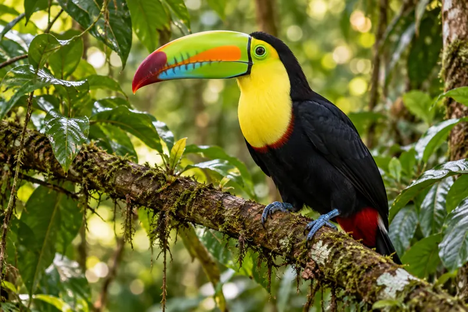
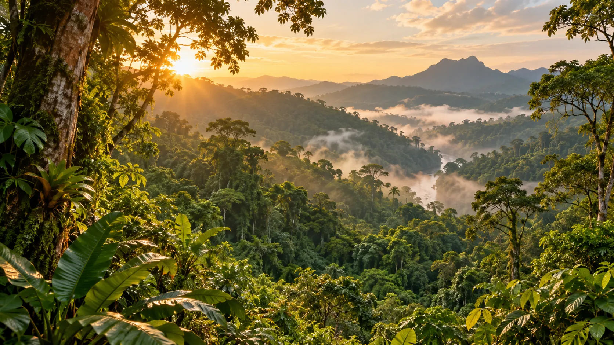
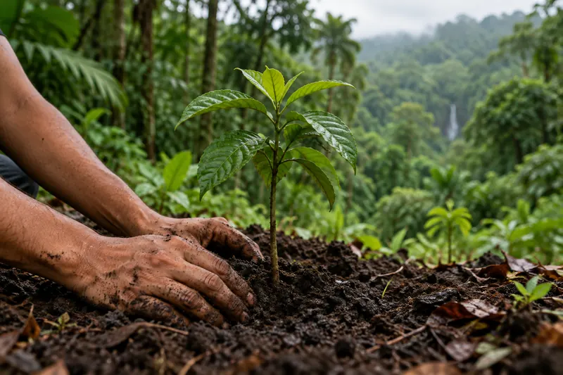
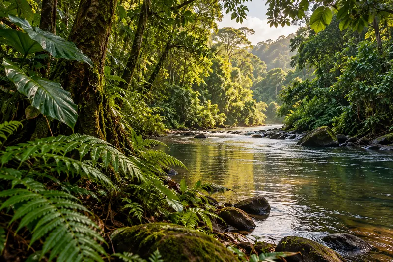
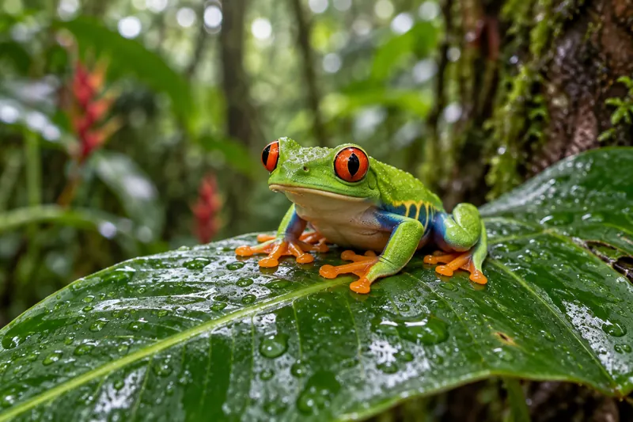

01 / ÉLŐVILÁGIsmerd meg az élővilágot
Fedezd fel a lombkorona színpompás madarait és az esőerdő rejtőzködő lakóit.
Tovább az élővilághoz
A Föld zöld tüdeje
Fedezd fel a lombkoronák, különleges állatok és rejtett folyók lenyűgöző világát. Ismerd meg az élőhelyet, amelynek védelme mindannyiunk közös ügye.
Rejtett kincsek, végtelen élet
01 / ISMERD MEG
 AZ ERDŐ MÉLYÉN / 01
AZ ERDŐ MÉLYÉN / 01
EGYÜTT LÉLEGZÜNK A TERMÉSZETTEL
A trópusi esőerdők a Föld legkülönlegesebb élőhelyei közé tartoznak. A lombkoronától az erdő talajáig minden réteg élettel teli, és szorosan összekapcsolódik a víz körforgásával, az éghajlattal és az ott élő közösségekkel.
Ismerd meg az élővilágotLépj közelebb a természethez
Madárdal, apró élőlények és rejtett tájak várnak — induljon a felfedezés.

01 / ÉLŐVILÁGFedezd fel a lombkorona színpompás madarait és az esőerdő rejtőzködő lakóit.
Tovább az élővilághoz
02 / TIPPEKIsmerj meg egyszerű szokásokat, amelyekkel a mindennapokban is segítheted a természet védelmét.
Tippek az erdő védelméhez
03 / TÉRKÉPIndulj útnak a trópusi erdők folyói, zöld völgyei és különleges helyszínei között.
Térkép megnyitása
04 / KVÍZJöhet néhány kérdés az esőerdők állatairól, növényeiről és különleges rétegeiről?
Kvíz indítása